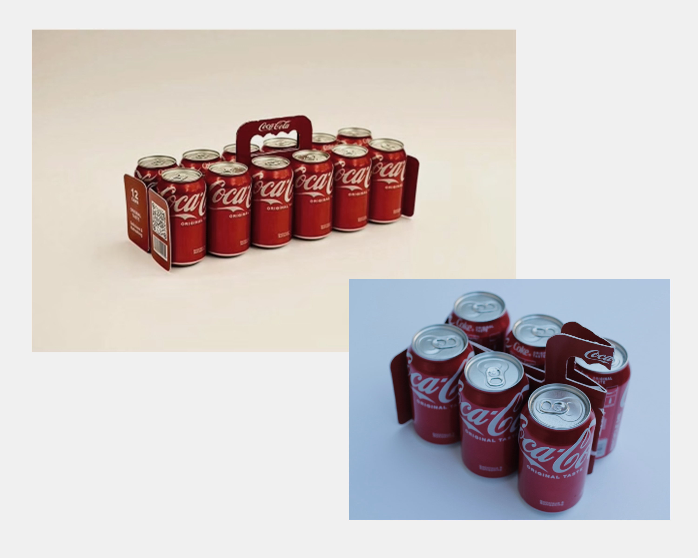
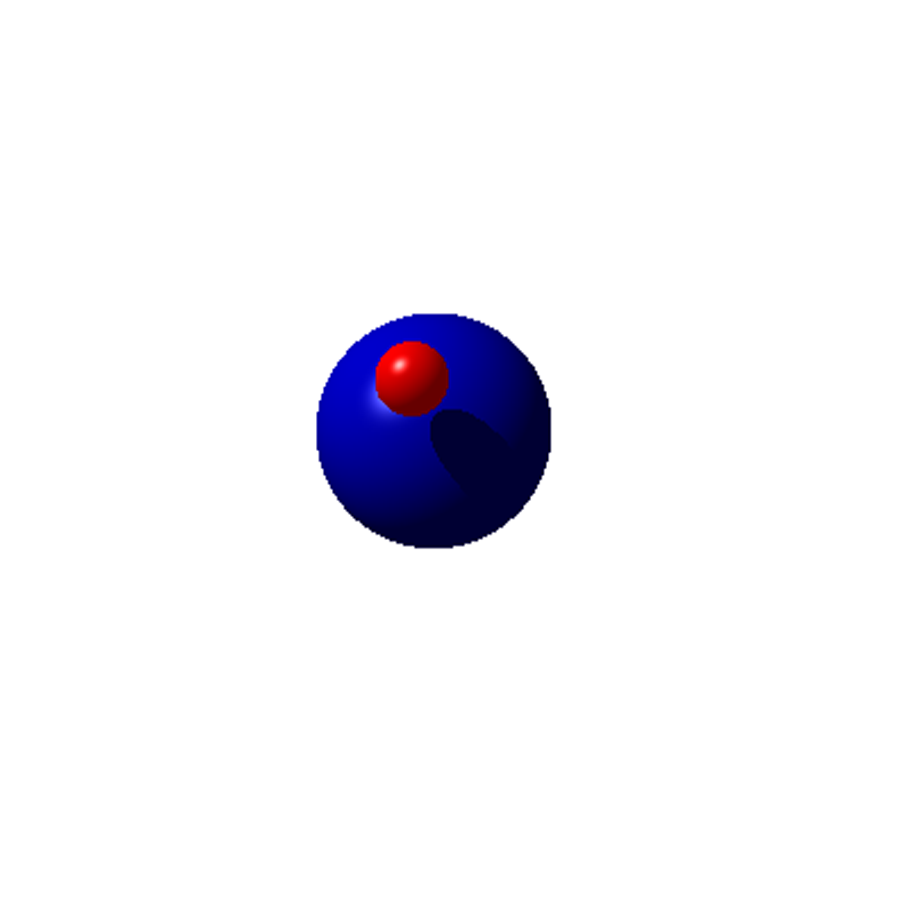
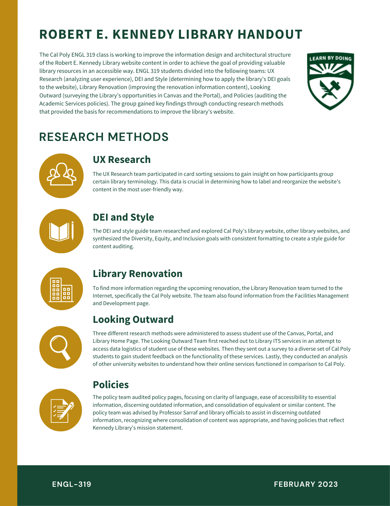
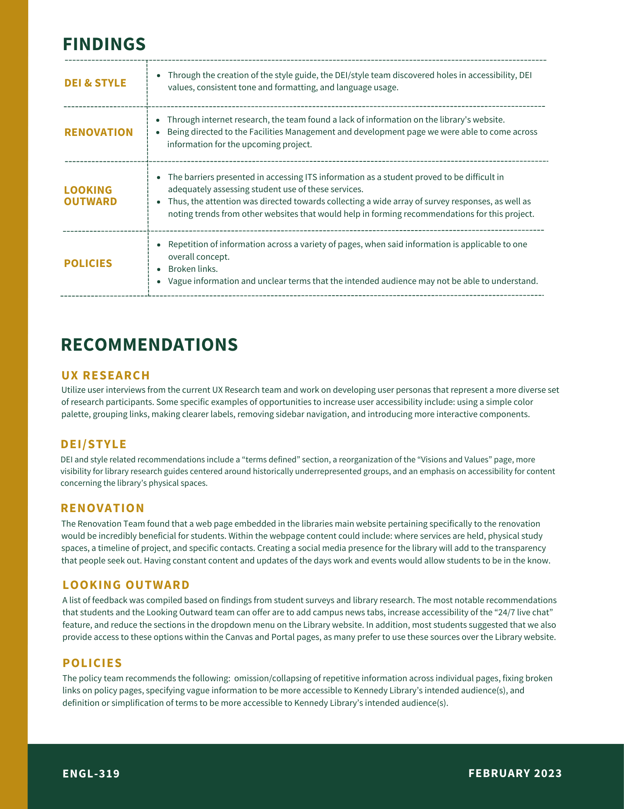

Cal Poly SLO Projects
Eco Pack 2022
Submission for the 13th annual 48 Hour Repack Competition, in partnership with Coca Cola.
My team placed within the top 10 submissions in the nation. As the team's graphic designer, I created the dieline for the Eco Pack packaging.
See our marketing video or product details on the 48HR Repack website below.

LAES Website
Redesigning pages and conducting usability tests for the Liberal Arts and Engineering Studies department's website at Cal Poly SLO. Employed as a LAES department assistant from January 2022 to June 2022.
Used agile and scrum methodologies to complete deliverables and consult with department heads, Dr. David Gillette and Dr. Michael Haungs. Other job tasks included assisting the Empowering Autistic Scholars (EAS) Program director.
Visit the link below to view the site.

Ray Casting Program
Functional ray casting program with color and collision data definitions. Vector fuction implementation. Written entirely in python, for the Fundamentals of
Computer Science course at Cal Poly.

Robert E. Kennedy Library Website Audit
Perfomed a content strategy audit for the Cal Poly Robert E. Kennedy Library Website with the ENGL 319 class (Information Design and Production). My project team designed the 1-pager to present our findings to the library staff during a final audit presentation.
 
Screen Printing Infographic
Infographic about the screen printing process for ENGL 149 (Technical Writing for Engineers).